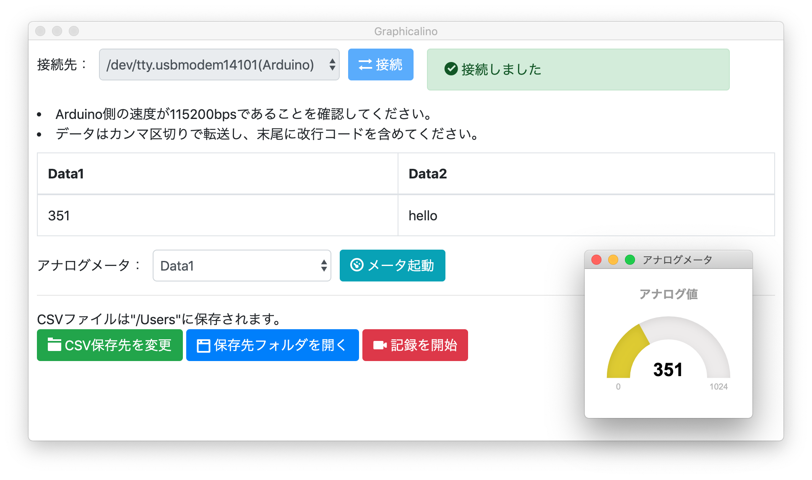

シリアル通信を支援
Graphicalino（グラフィカリーノ・略称: Gino）は、Arduinoからのシリアル通信で受け取ったデータを見やすくし、CSV書き出しをすることでユーザをサポートします。
普通なら、Arduino IDEのシリアルモニタや簡単なシリアル通信のプログラムを自作すると思います。ですが実際、Arduinoは簡単にデータを見ることができても書き出しができません。自分でプログラムを作れば書き出しは可能になりますが、そのスキルを持たない方は打つ手がありません。そこでGraphicalinoは、GUI環境でのデータの閲覧と書き出し機能を提供します。
すぐに使いこなせます
使い方はとてもシンプルです。起動すると自動的にArduinoを検出します。そのためArduinoのシリアルポートを事前に調べる必要はありません。
検出が終わりましたら接続します。データのカラム数はGraphicalinoが自動検出し、データは表形式で表示します。また、1カラムを集中して監視したい場合は、監視したいカラムを選択してメータを起動させてください。
データの記録はディレクトリを決めて、[記録を開始]をクリックするか、スペースを押下してください。終了時も同じです。記録が完了したら、データを確認してください。保存先ディレクトリへは、Graphicalinoからすぐにアクセスすることができます。
